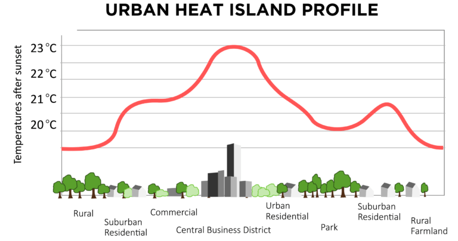
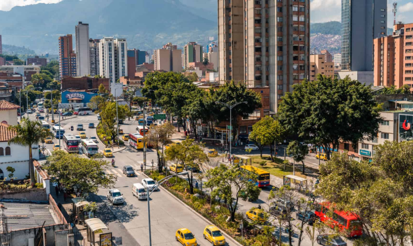
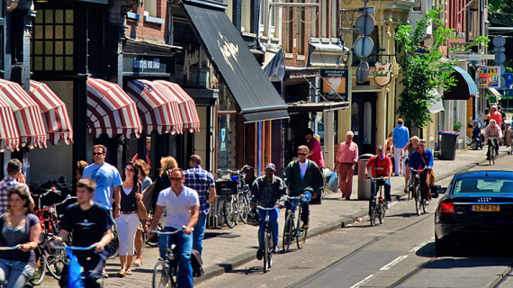
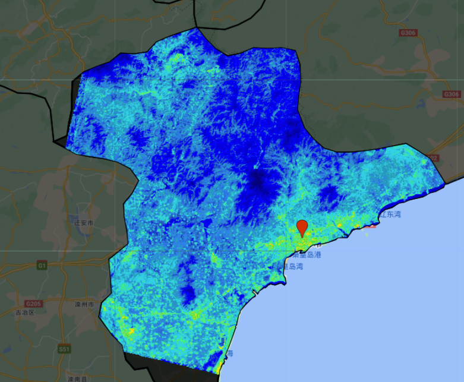
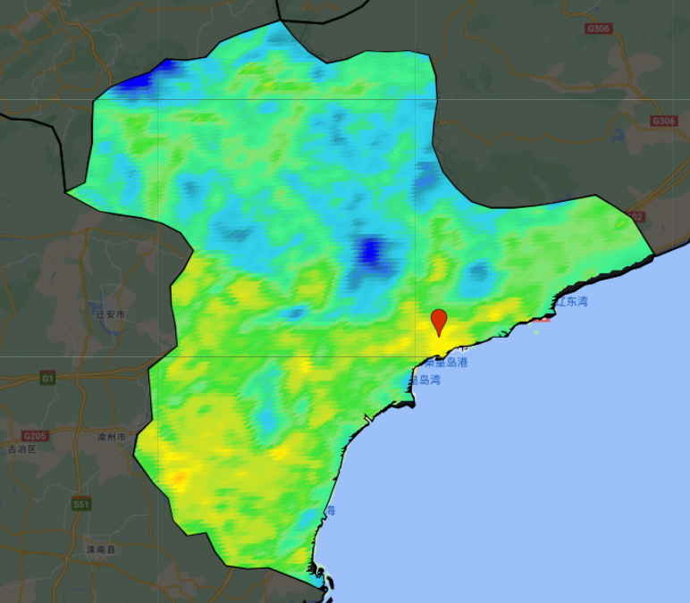
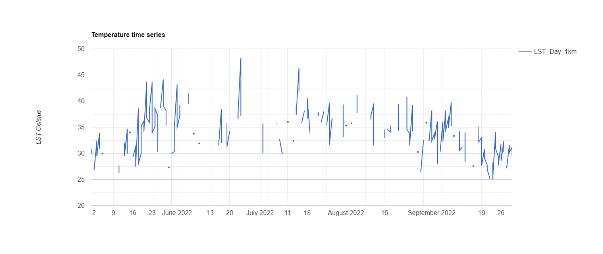
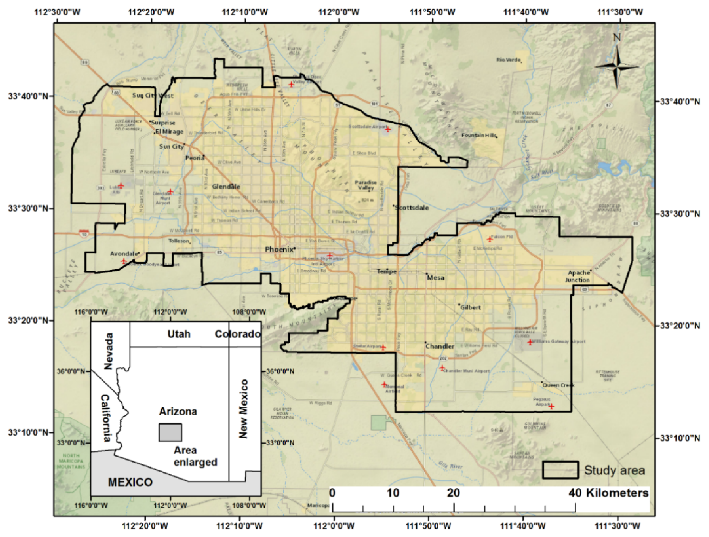
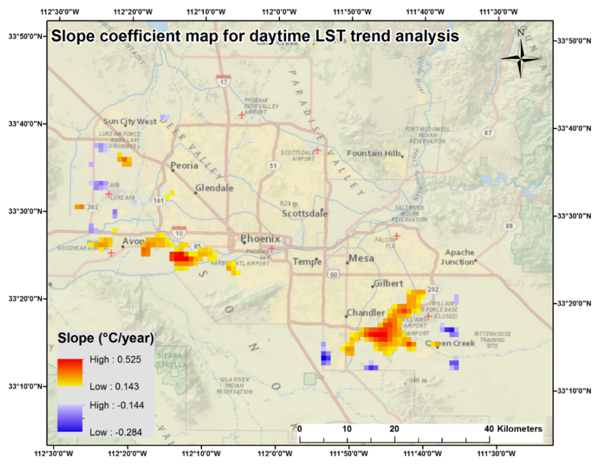
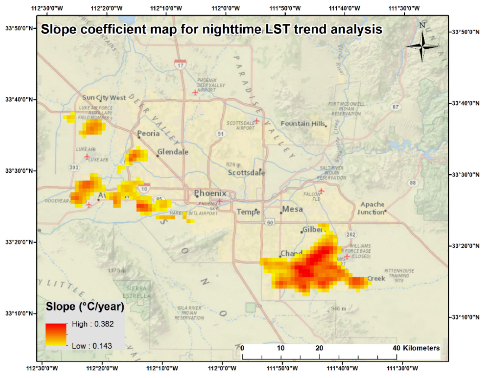

8 Urban Heated Island
8.1 Summary
8.1.1 Background
Various problems will accompany rapid urban development. Many cities, especially megacities, are facing problem caused by urbanization. Because of urban sprawl, Urban Heat Island (UHI) phenomenon expanded.
8.1.2 What is the UHI
UHI means any urban area which is significantly hotter than the neighboring area. Urban heat island is highly noticeable during winter and summer periods, and the temperature difference is often greater at night than in the daytime.
8.1.3 Reason for the UHI
1.Low Albedo Materials.It depends on the arrangement of surfaces, materials, pavements, coatings, etc. Albedo has a direct impact on the formation of the microclimate.
2.Paved and Impermeable Surfaces.Paved over surfaces, such as roads and parking lots, can absorb solar radiation as heat, and these surfaces are typically impermeable,
3.Thermal Mass.Buildings contain a lot of thermal mass, which means they store a lot of heat during the day and are slow to release the heat overnight.
4.Lack of VegetationForests are wiped out on a massive scale to meet the demand of various urban facilities. Lesser trees mean less cooling efficiency.
5.Human Gathering.As human gathering is huge at the city centers owing to the availability of various facilities, the emission of CO2 is also huge in these areas. CO2 stores heat, causing enhanced atmospheric temperature. The ultimate effect is that it assists in the formation of heat island to a great extent.
8.1.4 Impact for the UHI
1.Climate
Besides the high-temperature increases, urban heat island (UHIs) can bring forth secondary effects on the local weather and climate. This includes changes in local wind patterns, the formation of fog and clouds, precipitation rates and humidity.
2.Health
Human health is negatively impacted because of increased general discomfort, exhaustion, heat-related mortality, headaches, heat stroke and heat cramps.
3.Economic
Increased temperatures during summer in cities amplify energy demand for air conditioning.
4.Environment
UHI raises electricity demand during summer. As a result, power plants have to supply the needed extra energy, and since they rely on fossil fuel for energy production, there is an increase in greenhouse gas emissions and air pollution.
8.1.5 Case about how to resolve the problem with UHI
8.1.5.1 City level– Cities100: Medellín’s interconnected green corridors

Since 2016, Medellín has created 30 “Corredores Verdes”, an interconnected green network throughout the city. This action further connects existing green spaces, improves the biodiversity of the city and reduces the urban heat island effect of the city. By planting a large number of trees in the city, air pollutants are absorbed and have a profound impact on the local urban environment.
Specifically, the city employs people to train as urban gardeners and planting technicians to plant a number of trees. Nearly 10,000 trees have since been planted along 30 corridors. These green corridors provide Medellín with a large number of ecosystem services: they help to reduce the city’s average temperature by 2°C, achieve carbon sequestration through plant growth, capture particulate matter (PM2.5) to improve air quality, and increase the city’s biodiversity by creating more wildlife-friendly habitats.
8.1.5.2 Neighbor level– the Climate Street in Amsterdam
One of Amsterdam’s initiatives as an international model of a sustainable city is the Climate Streets. It aims to achieve CO2 reduction and environmental protection in the streets.

The project focuses on the deep night light automatic attenuation device, and the built-in garbage compression equipment is installed in the solar BigBelly garbage bin, which is a 35-fold increase in the garbage bin space recovery rate. The plan also installs smart meters in merchants along the street to connect them to energy-efficient appliances. Expert Ke can keep abreast of energy consumption through the energy visual screen, and can reduce or turn off unused household appliances or electric lights based on smart meters.Merchants can also get a chance to enjoy preferential protection when purchasing energy-saving appliances or energy-saving lamps after providing an energy bill to the Energy Office of the Climate Bureau.
8.1.6 Practical on GEE
Here I chose to use two geographic datasets, Landsat and Modis, to calculate the temperature of Qinhuangdao. landsat has a higher resolution than Modis, but requires a series of computational processes to express the temperature in degrees Celsius. In addition, Landsat data is collected at a slower rate, with remote sensing images taken twice a month. Modis, on the other hand, collects data every two days, so the time series analysis using it is a good option, but it cannot be used for spatial analysis.



8.1.7 Application
I learned that the US Environmental Protection Agenda provides an idea for us to learn from on how to measure heat islands.
- Clarifying Objectives
In most cases, there are two main reasons for measuring heat island intensity:
1.energy
Higher urban temperatures drive demand for air conditioning, leading to higher energy bills during the warmer months of the year. Analyzing how temperatures in an urban area differ from those in the surrounding region will help you quantify the energy impacts.
2.public risk
Heat islands can contribute to poor air quality, magnify the impacts of extreme heat events, and put people’s health at higher risk. Identifying hot spots within a city can help focus interventions where they are most needed during heat waves.
- Identifying Data Needs
1.research area
Assessments focused primarily on energy-related impacts of heat islands typically compare the temperature in the overall urban area with the temperature in the surrounding rural area to determine how much additional energy demand is caused by the urban heat island.
Assessments focused on health-related impacts of heat islands typically focus on assessing the differences in air temperatures among different locations within the city (i.e., identifying hot spots).
2.data type
- Air temperatures
Between 2012 and 2013, researchers at the University of Wisconsin installed 150 temperature and relative humidity sensors at a height of 3.5 meters on streetlight and utility poles in and around Madison, Wisconsin. The sensors automatically recorded instantaneous temperature and relative humidity every 15 minutes.
- Surface temperatures
Researchers at Arizona State University used MODIS and Landsat satellite data to examine changes in the City of Phoenix’s surface urban heat island over space and time, in relation to changes in land use cover, from 2000–2014.
3.how to analysis
Analysis with the Surface temperatures
The main objective of this study is to examine which regions within the Phoenix metropolitan area have experienced statistically significant LST increases and decreases compared to surrounding non-urbanized areas for both daytime and nighttime.
Study area:The Phoenix metropolitan area is located in central Arizona, USA, and is the sixth largest U.S. city。The daily high temperature exceeds 37.8 °C for an average of 110 days every year, which normally occurs from late May until early September. The highest temperature can reach more than 43.3 °C for an annual average of 18 days. The study area has diverse LULC types, including commercial, industrial, residential areas, undisturbed desert, agriculture, grassland, and water bodies.

Methodology:This study used MODIS LST 8-day composite images of daytime and nighttime from 2000 to 2014.Metropolitan and rural buffer pixels were extracted from the MODIS LST images and the pixel values of the daytime and nighttime images were converted to LST in degrees Celsius (°C). The average metropolitan and buffer surface temperature images were then calculated by averaging four June surface temperature images per year (two images in 2001) to obtain 15 daytime and 15 nighttime average surface temperature images. Finally, the average annual surface temperature for the entire buffer zone was calculated and subtracted from each Phoenix pixel to produce a surface temperature difference map.
Output：These results indicate that most significant changes of SUHI intensity have taken place on the outskirts of the city with no significant changes observed in existing, developed, urban areas. The areas being continuously cooled during the daytime are all located on the city outskirts.
The red pixels have positive slope coefficients representing the areas with increasingly higher LST than the surrounding non-urbanized areas, while the areas that have negative slope coefficients (blue pixels) represent an increasingly lower LST than the non-urbanized areas during the study period (Figure 4). The greater the absolute value of the slope coefficient is, the higher the ΔTu-r change will be.


Based on the results and findings from this research, we would recommend that increase in vegetation cover, with the trade-off between water and energy carefully studied, can be a potentially effective means to mitigate the UHI effect in those high SUHI intensity areas. It is an easy, low-cost, and feasible way to lower the UHI effect and conserve energy.
Comment
Although the spatial resolution of the MODIS LST images (1000 m) is slightly coarse, a total of 2766 pixels were assessed for the entire Phoenix metropolitan area, a relatively large sample size. Therefore, the problem of the resolution is not considered. For this study, we restricted our analysis to the month of June, as Phoenix experiences relatively hot, dry, sunny and calm weather conditions for much of the month. As such, it is considered an ideal time period for urban LST. I learn that when I research the UHI, I need to consider the aspect of climate to choose the data in the study.
8.1.8 Reflection
As the goal of sustainable urban development continues to be emphasized, how to measure urban heat island intensity and how to address it is a key concern for governments. It is important to note that governments should not limit their knowledge of urban mitigation to planning strategies. It is also important to visualise urban heat island areas through remote sensing data analysis and to target specific strategies. We need to learn from other good examples of implementation measures, such as forming urban green belts, increasing urban wetlands, increasing vertical greening of buildings, etc., as mentioned in the study notes. Through studying the literature during the week, I found that there are very different ways to study urban heat islands, and so far I have only studied urban heat island intensity measured by urban surface temperature. There is a lack of consideration of the effects of urban building density, air pollution and other factors. This will be a direction of study for me after this.